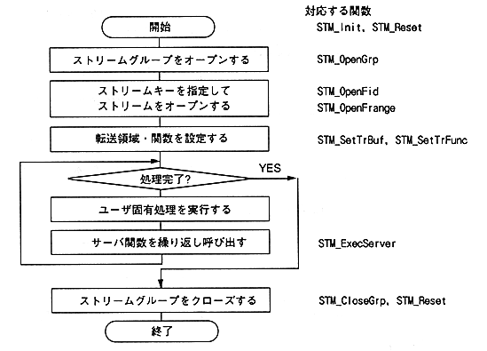

Return to previous page ｜ Return to menu ｜ Go to next page
-
4.3 Stream access procedure
- Stream access is performed according to the following procedure.

Figure 4.1 Stream access procedure
Return to previous page ｜ Return to menu ｜ Go to next page